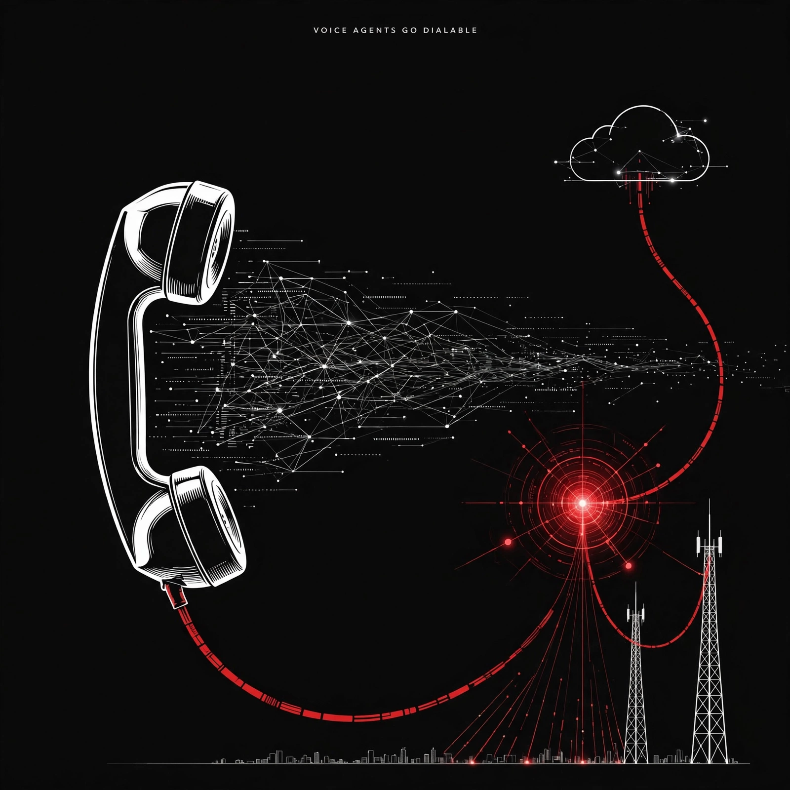

[795]
OpenAI SIP outbound calling goes GA to all orgs via Live API/SIP trunk [announced-live]
Daily digest

Watch [788] — fetch: Apiiro report + 1,122-file sample — count needs primary artifact, Don't-Ask-Again secret lesson.
Watch [786] — fetch: anthropics/claude-code issue + 2.1.31x fix release notes — email in context removal pending.
Watch [787] — fetch: anthropics/claude-code #108252 + maintainer reply — hooks reset to {} after container swap.
Watch [797] — need second source: METR 11-week report — doubled R&D claim is single-source summary [single source].
Watch [790] — need primary URL: ACP registry commits for Codex 2.5.1-preview.23/.24.
Watch [798] — need primary URL: ACP registry commit 2026.11.06-9f2837a + kimi-code 2.5.2 notes.
Watch [792] — need dated primary: github google/skills repo + Apache-2.0 license.
Watch [799] — need live-link proof: Foundry docs/model-catalog + preview pricing for H3 Max/Turbo [announced-coming].
Watch [800] — need primary artifact: HyperFlow H3 Flash weights repo + license; numbers [unverified].
Watch [803] — need per-test scores: Artificial Analysis Index v5 methods; [analyst take] [single source].
Rejected [791] — packaging-only Llama 2 7B ONNX repackage, no benchmarks, not new model.
Rejected [801] — confirmed non-release explainer (no GLM-5.5), context only.